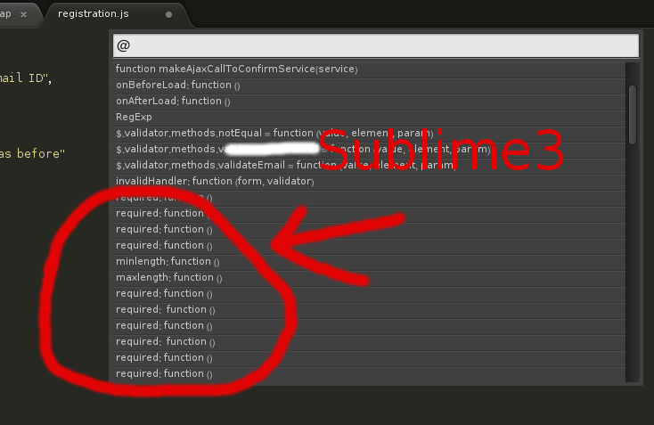

Why Emacs is better editor - a case study for javascript developer
UPDATED:
Let's see an example in real life development.
Note
For people who does not get the key points of this article, here are the points:
- Emacs has an embedded javascript interpreter which I extend a little bit.
- Other editors just use external tools or regular expression to do the semantic analysis.
- The difference of above two is bigger than the difference between machine gun and spear.
Problem
I'm maintaining a big javascript file with thousands of lines of legacy code.
My most urgent issue is how to list all the functions in that javascript file and jump to the definition of specific function easily.
The modern enterprise application usually define the javascript function in some complex data structure. So most editors are not good at listing the functions.
To understand what "complex" means, let's check some code from real world application:
$(el.completeRegistrationForm).validate({
ignore: " :hidden",
rules : {
password : {
required : function () { return $(el.password).is(":visible"); }
},
accountNumber : {
required : function () {
return $(el.accountNumber).is(":visible");
},
digits : true
}
// ... I skipped next 200 lines which are similar to above lines
},
messages : {
password: {
required : "Please input a valid password"
},
accountNumber: {
required : "Please provide a valid account number",
digits : "Please enter only digits",
}
// ... I skipped next 200 lines which are similar to above lines
}
});
Most editors like Sublime Text 3 cannot display the javascript functions with meaningful context in this case. All you can see is only a bunch of functions with name "required".: 
Solution
Emacs has a js2-mode which is basically a javascript interpreter written in lisp. It's created by Steve Yegge and now maintained by mooz.
Since js2-mode is a interpreter, basically it can do anythig you want. The key point is to understand the Abstract Syntax Tree (AST) defined in js2-mode.
I already submitted the patch to mooz so everyone will enjoy this feature in the future.
Here is the screen shot of emacs in old js2-mode, the UI is based on Imenu Mode and helm: 
The screen shot after we applying the above patch: 
Summary
That's an example of beauty of Emacs.
It gives you freedom and power. You can base your work on the top geeks like Steve Yegge and mooz. Just a few lines of lisp code to kick ass.
Update
My patch is incorporated into js2-mode since version 20140114. You can install it through emacs package manager.
After installing js2-mode, you need paste only one line code into your ~/.emacs to enable the feature:
(js2-imenu-extras-mode)
The UI to display the candidate in this actile is from package helm. But there are many other UI front end for imenu instead of helm.
The helm version should be 20140125.1101 or higher, you can install helm from melpa.
After installing helm, you can use command "M-x helm-imenu" to show the list of functions to jump to. Here is the screen shot how I use imenu in my hello2.js: